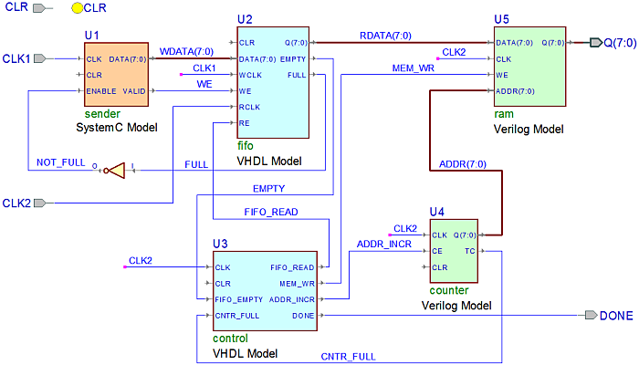

FIFO_mix Design
Text and Graphical Design Entry,Verilog/VHDL/SystemC Simulation, Embedded PSL, Coverage(Code, Expression and Toggle) and Xtrace.
This design implements simple text transmission system implementing FIFO and RAM.

The design demonstrates the use of various design source formats and HDLs:
- Block Diagram
- State Diagram
- SystemC
- Verilog
- VHDL
The SystemC module sender reads data from the text.txt file and
sends it, one character per each rising clock edge, to its DATA
output. Data generated by the sender is fed to the inputs of
the fifo module (written in VHDL).
The Verilog module ram reads data from the fifo at slower clock
speed. The Verilog module counter provides address for ram memory
access.
State machine control synchronizes the work of fifo, counter and ram.
The complete system is described in the top block diagram, shown above. Testbench file top_tb.vhd is also provided.
Please note that simulation macros do not build SystemC
module. Before the first run, or if you make any changes to sender.h or sender.cpp, remember
to build the sender.dll module using provided configuration file (sender.dlm) or BuildSC.do script.
Sample demonstration schedule:
- Open and review top.bde diagram. Briefly explain function of the blocks. Push into the VHDL, Verilog or FSM blocks if interested.
- If PSL properties/assertions and coverage are presented, open fifo.vhd and counter.v to demonstrate highlighted embedded PSL.
- Open sender.h and notice declarations of f (input file handle), snd (synchronizing event), prc_readsend (thread process reading lines/sending characters) and prc_synch (method process synchronizing reads/writes with control signals). Observe how processes are registered in the constructor SC_CTOR and their static sensitivities are specified [this step is optional if other verification techniques are the focus of presentation].
- Open sender.cpp and have a look at the implementations of both processes. Notice how prc_readsend opens text file upon activation of CLR and starts reading it when CLR goes inactive. File is read line-by-line into the buffer. When prc_synch notifies snd event, it triggers sending one character from the buffer [this step is optional if other verification techniques are the focus of presentation].
- If SystemC sources are modified (or right after restoring the design), build sender.dll using provided configuration file (sender.dlm) or BuildSC.do script.
- Open the text file that is read by the sender block: text.txt -- it should contain Hamlet monologue.
- Run Regular_Sim.do script to compile remaining sources, initialize simulation,
create waveform, open Memory Views for the FIFO and RAM memory and Assertion Viewer. It
will also run simulation for 70 ns to demonstrate initial data
transfers.
- Proceed with simulation using 70 ns step. Observe results in Memory Views, Waveform and Assertion Viewer.
- When you notice that assertion in fifo.vhd was activated (yellow A letter), you can hit Run button in the toolbar to see Cover message in the console.
- Click End Simulation button in the toolbar to end simulation and see assertion firing.
- Close all document windows and open Combo_Debug.do script; review contents, paying special attention to explanatory comments.
- Run Combo_Debug.do
script to perform complete simulation session. It will open two HTML
reports in the Document pane (Expression Coverage and Xreace reports)
and two standalone windows (Code Coverage and Toggle Coverage viewers).
- Analyse reports from Coverage and XTrace in any convenient order.
- Remember to expand all branches of hierarchy in Coverage viewers/reports.
- The best examples of Expression Coverage are in the /top_tb/UUT/U2/FREAD